About us
The Trauma Care team
Find out who makes up the team behind Trauma Care, and how their backgrounds contribute to our mission.
Our supporters
Trauma Care patrons
-
Dr John Etherington CBE
Trauma Care Patron
Dr Etherington served in HM Armed Forces as the Director of Defence Rehabilitation and Defence Consultant Advisor in Rheumatology, Rehabilitation and Sport & Exercise Medicine. He was also Clinical Director at the Defence Rehabilitation Centre, Headley Court, and received a CBE for Services to Military Medicine. He has also served as National Clinical Director for Rehabilitation NHS England and as President of the Faculty of Sport and Exercise Medicine.
-
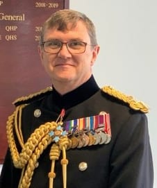
Major General Tim Hodgetts CB CBE KHS DL
Trauma Care Patron
Major General Hodgetts is the current Surgeon General of the UK Armed Forces, Master General of the Army Medical Services, and Chair of the Committee of Military Medical Chiefs in NATO (COMEDS). An Emergency Physician by clinical background, he has a career-long passion for improving trauma care outcomes from point of wounding to hospital, in both military and civilian environments. The Surgeon General is, ex officio, a patron of Trauma Care.
-
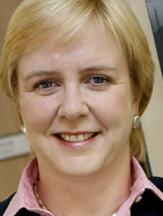
Dame Julie Moore DBE
Trauma Care Patron
Dame Julie Moore is Director of the Prince of Wales’s Charitable Foundation and a member of the Board of the 2022 Commonwealth Games. She became CEO of University Hospitals Birmingham NHS Foundation Trust in 2006. She was made a Dame Commander of the Order of the British Empire in the 2012 New Year Honours, and was included in BBC Radio 4’s Woman’s Hour list of the 100 most powerful women in the UK.
-
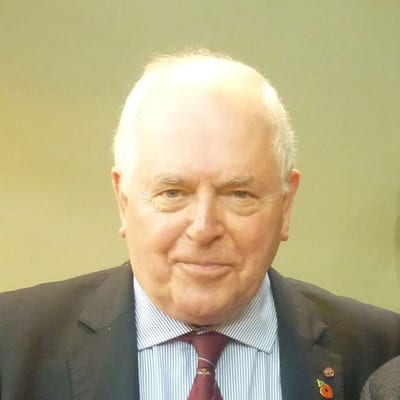
Professor Jim Ryan OBE
Trauma Care Patron
Formerly Joint Professor of Military Surgery at the Royal Army Medical College, London, Professor Ryan’s war and disaster experience covers military and humanitarian operations in Northern Ireland and Cyprus. Professor Ryan was the first Leonard Cheshire Professor in Conflict Recovery at the Department of Surgery, University College London. In 2002 he became International Professor of Surgery at the United Services University in Maryland. He was awarded the OBE in 2011.
-
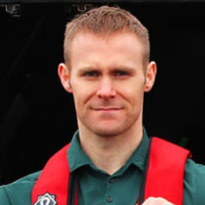
Mark Ormrod MBE
Trauma Care Patron
Mark Ormrod is a former Royal Marine Commando, Invictus Games athlete, author and motivational speaker. He joined the Royal Marines aged 17 and, after service in Iraq, was deployed to Afghanistan in 2007. On Christmas Eve that year, while conducting a foot patrol, he stepped on an improvised explosive device, losing both legs and his right arm. He became the first service person from Afghanistan to survive a triple amputation. In 2017 and 2018 he won 13 medals at the Invictus Games. He was appointed MBE in 2020.
Governance
Trauma Care board of trustees
-
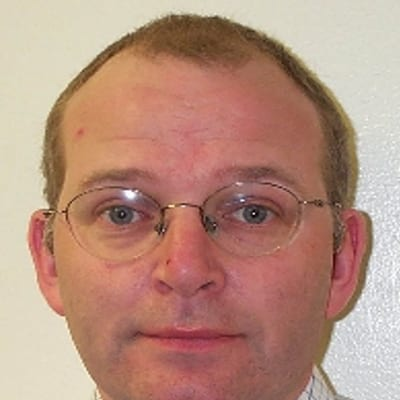
Professor Colonel Ian Greaves
Charity Co-Founder
Professor Colonel Ian Greaves is a Consultant in Emergency Medicine in Middlesbrough. Previously, he was a Consultant in Emergency Medicine across all three Armed Services. He has written, or edited, standard textbooks on immediate care, major trauma, major incidents and terrorism, and military history.
-
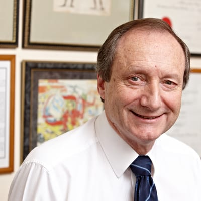
Professor Sir Keith Porter
Charity Co-Founder
Keith was born in Swindon, Wiltshire and educated at Marlborough College, prior to training as a doctor at St Thomas’ Hospital in London. In 1986 he took up appointment as Consultant Trauma Surgeon at the Birmingham Accident Hospital, a service eventually ending up at the Queen Elizabeth Hospital. He was made Professor of Clinical Traumatology in 2005, and was the Civilian Lead for the management of injured soldiers returning from Iraq and Afghanistan, treated at the Royal Centre of Defence Medicine in Birmingham. For Services to the Military, he was knighted by the Queen in 2010.
Sir Keith’s interest in pre-hospital care was reflected in his appointment as Vice Chair of BASICS, Chairman of the Faculty of Pre-Hospital Care, and Chairmanship of the Inter-Collegiate Board for Training in Pre-Hospital Emergency Medicine. He was a co-founder of Trauma Care in 1997, where he has been both Chairman and Honorary Secretary, with responsibility for organising the Annual Conference. As he steps back from an active role within the organisation, he remains a trustee.
Keith is a former Clinical Trustee for St John Ambulance, and is a co-founder of the charity citizenAID. He has been the co-editor of the journal TRAUMA, and editor and author of numerous books. He has over 200 peer-review publications.
-
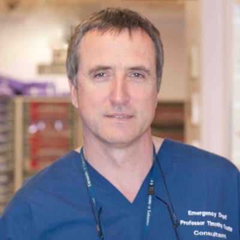
Professor Timothy J Coats
Trauma Care Chair, Board of Trustees · Professor of Emergency Medicine, University of Leicester
Tim Coats trained in Emergency Medicine in Leeds and London, developing a particular interest in pre-hospital trauma care, and completing an MD thesis in 1996 on the use of AI methods to incorporate patterns of change in physiology in a predictive model of outcome following injury. He trained in pre-hospital care with the London Helicopter Emergency Medical Service from 1990 to 1996.
Following being appointed as a Senior Lecturer at Barts and The London in 1996, with consultant responsibility for the London HEMS service, he moved to the University of Leicester as Professor of Emergency Medicine in 2003. He is a past Chair of the College of Emergency Medicine Research Committee, past Chair of the NIHR National Specialist Group for Injuries and Emergencies, and past Chair of the Trauma Audit and Research Network (TARN). In 2022 he became a NIHR Senior Investigator. His research interests are changes in coagulation following major trauma, artificial intelligence in healthcare “big data” applications, and patient-reported outcomes after major trauma.
You can find him on X at @tjcoats.
-
Jane Tovey
Honorary Secretary to the Board of Trustees
Jane has over 40 years’ experience in NHS Medical Illustration, supporting major trauma services and delivering a leading, research-active practice. A Fellow of the Institute of Medical Illustrators and former Institute Chair, she has advanced national standards, led quality audits, and championed innovation in telemedicine, AI, and professional education.
-
Carl Ledbury BEM
Trauma Care Honorary Treasurer
Carl joined the West Midlands Service as an ambulanceman in Birmingham in 1976, and qualified as a paramedic in 1986. He has held a number of posts, including leading ambulanceman, control room officer, incident commander, and clinical support officer. Carl is a past President of the Ambulance Services Institute, Ambulance Services Co-ordinator for the Remembrance Day Parade at the Cenotaph Whitehall, a trustee and board member of the Ambulance Staff Charity, and a trustee of the West Midlands Care Team.
-
Teresa Griffiths CBE ARRC
Trauma Care Trustee
Teresa is an executive leadership coach, speaker, and business consultant. She is also a Non-Executive Director for North Cumbria Integrated Care Foundation Trust, the Chair for the national charity Nurse Lifeline, and trustee for the Defence Medical Welfare Service (DMWS), Scottish Veterans Residences (SVR), and Trauma UK. She graduated as a nurse from St Bartholomew’s Hospital in 1988 and still holds her registration.
Teresa recently left the Royal Air Force after 27 years at the rank of Group Captain, having broken many glass ceilings. As a specialist Aeromedical Evacuation Nursing Officer, she deployed across the world to some of the most complex and challenging environments.
Teresa has led at all organisational levels and is skilled at recognising and nurturing individual strengths for the collective achievement of strategic goals. As a medical planner, she was responsible for the medical plans for operations in Iraq, Afghanistan and the Balkans, supporting global UN missions, and was the RAF Medical Lead for the Ebola crisis in 2014. As Clinical Director for overseas Defence Primary Healthcare in 2020, Teresa also led the Covid-19 response, responsible for 13 overseas bases. One of her greatest leadership achievements was relocating Defence’s Rehabilitation centre from Headley Court to Stanford Hall, when she was the Commanding Officer.
For her leadership, Teresa has been awarded the Queen’s Commendation for Valuable Service (QCVS), the Associate Royal Red Cross (ARRC), the OBE and CBE. She lives in the Lake District, spending any precious spare time in the fells with her rescue dogs, Woolfie from Transylvania and Simba from Cyprus.
-
Claire Burnell
Trauma Care Trustee
Claire’s profile will be available soon.
-
Surg Lt Cdr Laura Cottey
Trauma Care Trustee
Laura’s profile will be available soon.
-
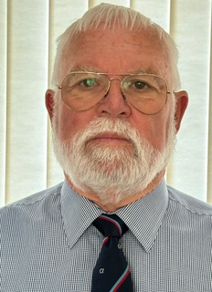
Michael Willis OBE FIoD
Trauma Care Trustee
Michael joined the Ambulance Service in 1967. He worked in Oxfordshire, West Yorkshire, Norfolk, East Anglia and Westcountry Ambulance Services. Michael has been involved in ambulance training and development since the 1970s. He has held various positions within the service, holding the post of Chief Executive for over 23 years. During this time he acted as the Professional Ambulance Advisor to the Department of Health and gave direct advice to the Secretary of State for Health, appropriate Ministers and, where appropriate, the Parliamentary Health Select Committee.
Michael is a founder member of JRCALC, and was the National Lead for Ambulance and Paramedic Training for the Association of Chief Ambulance Officers. During this time he initiated the registration of Ambulance Paramedics under the Council for Professions Supplementary to Medicine, which became part of the new Health Professions Council. He provided advice to, and worked with, Emergency Medical Services in Nova Scotia, Qatar and Arkhangelsk, and he has been involved in emergency care for over 50 years. Michael was awarded the OBE in 1996.
Running the charity
Trauma Care management board
-
Dhushy Surendra Kumar
Medical Director
Dr Dhushyanthan Surendra Kumar attended Bristol University Medical School, graduating in 1994. He undertook postgraduate training in the East Midlands and Oxford before being appointed a consultant in Critical Care, Anaesthesia and Pre-Hospital Care at University Hospital Coventry in 2006.
His other current roles include:
- Director of Clinical Audit for the Trauma Audit and Research Network (TARN), which manages trauma outcome data on behalf of NHS England
- Member and past chair of the Joint Royal Colleges Ambulance Liaison Committee, which defines the scope of practice for paramedics in England and the devolved nations
- Medical Incident Advisor for East Midlands Ambulance Service
- FIA licensed Chief Medical Officer, officiating at a number of motorsport events throughout the year
In 2009 he helped design and commissioned the medical centre and circuit medical services for the Abu Dhabi Grand Prix.
Dhushy has previously been a trustee of several charities including BASICS, local Headway, and The Air Ambulance Service. He has worked alongside charity staff, both in person at events and by helping to write copy for fundraising campaigns.
Dhushy’s interest in medical devices has seen him provide support to companies including Hamilton Medical, Sedana, Laerdal/Physiocontrol/Stryker and GE, and currently as a consultant to Aerogen.
His obsession with cars, and his work in the motor industry, has allowed him to work with marques such as TVR, Aston Martin, Porsche and Ferrari.
-
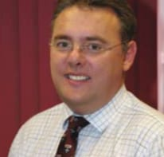
Jeff Garner
Journal Editor
Jeff Garner is a consultant surgeon at the Rotherham NHS Foundation Trust. He joined the Royal Army Medical Corps in 1990, and served in Northern Ireland, Kosovo and Afghanistan, before retiring in 2015. He maintains an active interest in trauma, working as a major trauma consultant at the Major Trauma Centre in Sheffield, as a Regional Course Director for the Royal College of Surgeons Definitive Trauma Skills Course, and as Editor-in-Chief of the journal TRAUMA.
He has published widely on his trauma research interests of blast injury and the management of the open abdomen.
-
Kelly Philpotts
Finance Manager
For any finance enquiries, please email Kelly at finance@traumacare.org.uk.
-
Professor Sir Keith Porter
Conference Lead
Sir Keith is also a co-founder of the charity and a trustee — see his biography above.
-
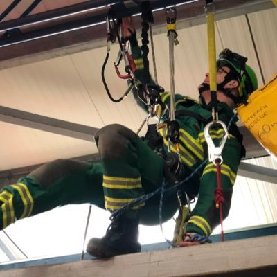
Adam Lote
Ways and Means Committee Lead
The office
Trauma Care operations team
You can contact the office for any questions you may have by emailing admin@traumacare.org.uk, or by ringing 0121 271 0380.
-
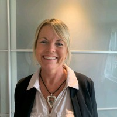
Lesley Cotterhill
Administration Assistant
For any general enquiries, please email admin@traumacare.org.uk.
The need
The need
Trauma is a serious public health problem, with notable social and economic costs. In the UK, 17,000 deaths each year are a direct result of injuries. Annually, injuries lead to 720,000 hospital admissions and 6 million visits to emergency departments.
Victims of trauma receive care and attention from many individuals within a wide range of specialities and professional backgrounds. Without commonly agreed standards, patients’ outcome may be less than optimal.
With thanks to
Our sponsors and partners
Without their support we could not keep our education affordable.